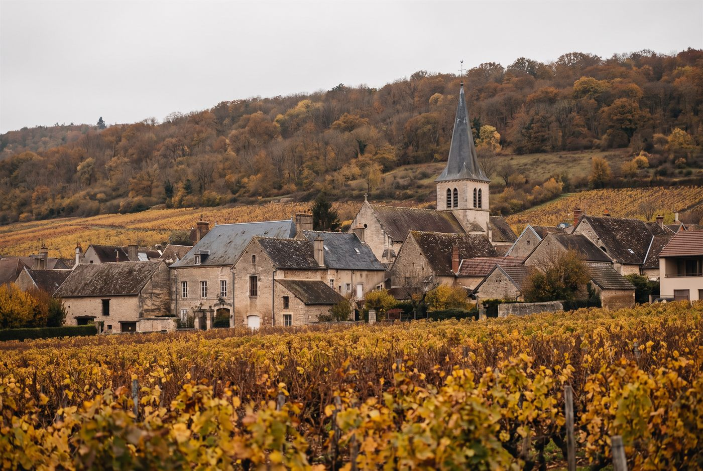

Les domaines · Côte de Nuits · Chambolle-Musigny
08
Chambolle-Musigny · Côte de Nuits
Domaine Felettig
Des Chambolle-Musigny purs, vibrants et élégants, portés par la fraîcheur et une pointe saline.

Ambiance de Chambolle-Musigny
Fondé par les parents d'Henri Felettig, qui vinifie lui-même depuis 1969, le domaine a pris sa forme actuelle en 1993 lorsque Christine et Gilbert ont rejoint leurs parents. Il compte aujourd'hui 13 hectares répartis sur une centaine de parcelles, de Gevrey-Chambertin à Beaune, dont sept premiers crus de Chambolle-Musigny. Les vins sont élevés 14 à 18 mois en fût, avec une part de bois neuf mesurée.
Rouges
- Cépage · Pinot noirLe grand cru de la Côte de Nuits du domaine, sur la commune de Flagey-Échezeaux.
- Cépage · Pinot noirSeul grand cru rouge de la Côte de Beaune, sur le versant est de la colline de Corton.
- Cépage · Pinot noirPremier cru situé au sud du village, sous Les Amoureuses.
- Cépage · Pinot noirPremier cru au nord du village, dans le prolongement de Bonnes-Mares.
- Cépage · Pinot noir
- Cépage · Pinot noir
- Cépage · Pinot noirPremier cru en haut de coteau, juste au-dessus de La Romanée.
- Cépage · Pinot noir
- Cépage · Pinot noirLe village de référence du domaine, issu de vieilles vignes de plusieurs parcelles.
- Cépage · Pinot noir
Ces cuvées vous parlent ?
Demander les disponibilités